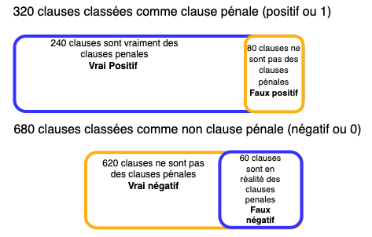
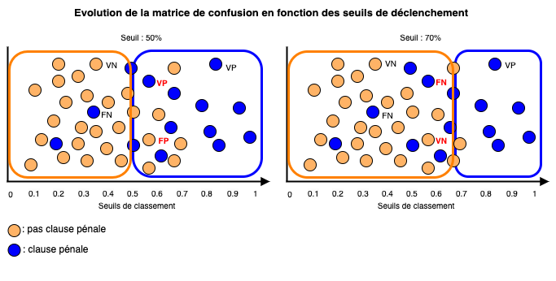

Les métriques d'évaluation
L'évaluation des modèles de machine learning pose des problèmes particuliers. Un programme informatique traditionnel prend en entrée des données et fournit un résultat toujours identique (en principe !) en sortie. Cette logique déterministe ne peut pas s'appliquer au machine learning et, en particulier, au NLP.
Revenons quelques instants sur les objectifs de ces modèles. On peut résumer leur finalité sous deux aspects :
- la prédiction d'une valeur (regression) : le quantum d'une peine, l'indemnisation d'un préjudice ou le montant d'une sanction pécuniaire ;
- la classification : la nature de la clause d'un contrat, l'issue d'un pourvoi en cassation (rejet, cassation), le type de matière (droit social, commercial, civil) traité par une décision de justice ou un contrat. Le modèle doit déterminer à quelle classe le texte appartient : il doit lui attribuer un label.
Et GPT, classification ou regression ? Dans les modèles de type [[Glossaire#Decoder]], l'objectif du modèle est de prédire un mot en fonction du contexte (la séquence des mots précédents). Pour ce faire, il fournit une répartition des probabilités concernant chaque mot du vocabulaire. En cela, il s'agit d'un classifieur multi-classes.
Processus d'évaluation inter-modèles : les benchmarks
Le monde académique a élaboré, au fil des ans, des jeux de données de références permettant d'évaluer les différents modèles. On peut faire trois remarques à propos de ces dataset :
- en quelques années, on est passé de données d'évaluation mono-tâche (reconnaissance d'entités nommées, Part Of Speech...) à des approches plus généralistes et se rapprochant des activités humaines comme répondre à des questions ou dialoguer ;
- ils permettent d'établir des comparaisons entre les modèles en présentant des jeux de données strictement identiques ;
- les métriques finalement calculées sont agnostiques vis-à-vis des modèles.
Les différentes métriques
Exemple : identifier une clause pénale
Prenons comme exemple un programme chargé d'identifier la nature d'une clause dans un contrat. Dans le cadre d'un audit, on l'entraîne pour reconnaître la présence de clauses pénales. Il opére une classification binaire : la clause est une clause pénale (positif) ou n'est pas une clause pénale (négatif).
Pour entraîner le modèle, on lui fournit un grand nombre d'exemples de clauses avec deux colonnes : la première comprend le texte, la seconde comprend la classe (0 : pas une clause pénale, 1: clause pénale).
Une fois entraîné, on lui soumet un jeu de données identiques qu'il n'a pas vu lors de la phase d'apprentissage, et on lui demande de classer les clauses.
Voici les résultats :
| Contrats | clause pénale ? |
|---|---|
| Clause 1 | [0.4, 0.6] |
| Clause 2 | [0.6, 0.4] |
| Clause 3 | [0.9, 0.1] |
| Clause 4 | [0.2, 0.8] |
| Clause n | [0.7, 0.3] |
On constate avec étonnement que le modèle ne sort pas un 1 (oui, il y a une clause pénale) et un 0 (non, pas de présence de clause pénale). Le résultat en sortie est constitué de deux valeurs qui correspondent à la probabilité que la clause soit oui (1) ou non (0) une clause pénale. Nous ne sommes pas dans une logique automatique : le modèle ne fait que produire une estimation probabiliste. Il n'est pas certain de la classe d'appartenance.
Par exemple, pour la clause 1, le modèle estime qu'il y a 60% (0,6) de chance qu'elle soit une clause pénale (classe 1 ou positif) et 40% qu'elle n'en soit pas une (classe 0 ou négatif).
La somme de ces deux nombres est systématiquement 1. En effet, il y a 100% de chance que la clause appartienne à une seule des deux catégories. C'est un classifieur binaire. Si l'on souhaitait classer une clause selon plusieurs classes (clause pénale, clause abusive, de non-concurrence), la somme des probabilités serait toujours 1 et le modèle produirait une répartition des probabilités entre les classes. Pour obtenir la plus probable, on sélectionnerait la classe ayant la probabilité la plus forte.
Dès lors, on peut se poser deux questions :
- à partir de quel taux de probabilité, estime-t-on que l'on est en présence d'une clause pénale ?
- si l'on fixe ce taux, disons à 50%, comment le modèle classe-t-il mes clauses par rapport à la réalité ? Dit autrement, quel est son taux d'erreur ?
Pour évaluer ce taux, il existe plusieurs métriques qu'il est important de connaître. Ces métriques s'appliquent à toutes les opérations de classification. Elles ont des impacts directs sur l'évaluation des systèmes d'Intelligence artificielle bien au-delà du NLP.
L'exactitude (accuracy)
C'est la mesure la plus simple à comprendre. Parmi toutes les clauses que je lui ai montrées, combien de fois le modèle a-t-il prédit correctement la présence d'une clause pénale ?
Imaginons que notre jeu de données d'évaluation porte sur 1000 clauses. Dans notre jeu de test, on sait que 300 clauses sont des clauses pénales.
Le résultat du classement opéré par le modèle est le suivant :
- 240 clauses pénales classées comme clause pénale (Vrai positif : 1 classé en 1)
- 80 non clauses pénales classées comme clause pénale (Faux positif : 0 classé en 1)
- 620 non clauses pénales classées comme non clause pénale (Vrai négatif : 0 classé en 0)
- 60 clauses pénales classées comme non clause pénale (Faux négatif : 1 classé en 0 )
Le modèle a fait des erreurs ! C'est-à-dire qu'il a mal classé certaines clauses.

Si l'on veut évaluer l'exactitude du modèle, on peut évaluer le nombre de fois où il attribue correctement la bonne classe aux clauses : sur 1000 clauses, il a classé correctement respectivement 620 et 240 clauses correctement soit 860/1000 ou 86% d'exactitude. C'est un très bon score. Trop bon ?
Imaginons que le modèle ait classé toutes les clauses en non clause pénale soit la classe 0. Il aurait donc classé comme négatives et avec exactitude 70% des clauses puisqu'on sait que 700/1000 clauses ne sont pas des clauses pénales. Il est relativement performant mais est-il utile ? En effet, si l'on veut auditer un ensemble de contrats et identifier la présence de clauses spécifiques, il faut pouvoir discriminer les clauses pénales des autres. Précisément, cette mesure ne donne que la performance à classer correctement mais pas la performance à attribuer la classe qui nous intéresse. C'est pour cela, qu'il faut élaborer une autre approche en utilisant une technique appelée la matrice de confusion.
La matrice de confusion
La matrice de confusion est construite en comparant les prédictions faites par le modèle et la réalité. Elle va être utilisée pour calculer les métriques de classification.
Dans notre exemple, cette matrice se présente de la manière suivante :
| Prédiction : clause pénale (1) | Prédiction : pas clause pénale (0) | |
|---|---|---|
| Réalité : clause pénale (1) | 240 | 60 |
| Réalité : pas clause pénale (0) | 80 | 620 |
Les lignes représentent la réalité, c'est-à-dire les clauses associées aux classes dans notre jeu de données d'évaluation. Les colonnes représentent les prédictions faites par le modèle. Dans la colonne 1, le modèle a prédit correctement 240 clauses (Vrai positif) et il s'est trompé sur 80 clauses mal attribuées (Faux positif).
Cependant, on peut modifier ce chiffre assez facilement en jouant sur le seuil d'attribution au-delà duquel le modèle attribue la classe 1 ou 0. On a vu plus haut que les données de sortie sont des probabilités que la clause appartienne à la classe 1 ou 0 et non directement 1 ou 0. Il est possible de modifier le seuil de déclenchement. Par exemple, on peut estimer qu'il faut que le modèle attribue une probabilité de plus 0,7 pour considérer qu'une clause est une clause pénale. Si on joue sur ce facteur, que se passe t-il ?
Le graphique suivant illustre les conséquences de la modification du seuil de déclenchement.

Si l'on augmente le seuil au-delà duquel le modèle considère que la clause est une clause pénale (classe 1), il y a un effet de vases communicants :
- les faux positifs diminuent et viennent alimenter les vrais négatifs ;
- les vrais positifs diminuent et viennent alimenter les faux négatifs.
Le choix de ce seuil a des effets concrets sur les prévisions et les objectifs que l'on se fixe. Si l'on privilégie un seuil élevé, on détectera moins de clauses pénales dans nos documents mais avec une certitude plus grande. Dans le même temps, beaucoup de clauses pénales ne seront pas identifiées comme telles (augmentation des Faux Négatifs). A l'inverse, si l'on baisse le seuil de déclenchement, on aura beaucoup de clauses non pénales mal classées (Faux Positifs) ce qui demandera un travail supplémentaire en aval.
Ces enjeux ne sont pas propres au NLP. Leur compréhension permet de placer le débat sur d'autres terrains si l'on substitue à la détection de clause, un classement concernant la dangerosité d'un individu ou son risque de récidive en matière pénale. Le seuil de déclenchement illustre des problèmatiques plus fondamentales entre liberté (seuil élevé) et sécurité (seuil bas).
On a détaillé les effets du seuil de déclenchement sur notre matrice de confusion mais nous n'avons pas détaillé les métriques qu'on peut en tirer. Les métriques de base des modèles de classification sont la Précision et le Recall (Rappel).
Précision et Recall
Lors de l'audit de documents, et si l'on souhaite identifier des clauses spécifiques, on aimerait identifier deux indicateurs pour évaluer notre système.
Le premier, nommé Précision, mesure le taux d'erreurs du modèle quand il fait une prédiction positive. Pour cela, il suffit de faire le rapport entre le nombre de Vrai Positif (VP) divisé par la totalité des prédictions positives (VP+FP ). Plus ce taux est élevé, plus le modèle est précis.
Toutefois, cet indicateur se borne à compter, parmi les clauses sélectionnées (cf. schema supra), celles qui sont bien classées. Mais il existe également des clauses positives qui sont classées comme négatives (Faux Négatif). Par conséquent, cet indicateur ne répond pas à la question sur l'efficacité à sélectionner les clauses positives.
Pour illustrer cela, prenons un cas extrême. Mettons un seuil de déclenchement au-delà de 0.8. Dans ce cas, selon notre schéma, il n'y a plus de Faux Positif (FP), la Précision est donc de 100%. Mais quid des nombreux Faux Négatifs créé par ce seuil ? Comment affectent-ils mon modèle ?
Pour répondre à cette question, une autre mesure, le Recall ou Rappel permet de calculer le taux de positifs calculé par le modèle en prenant en compte l'ensemble des clauses positives (VP +FN) et non simplement celles que le modèle considère comme positives.
Dès lors, quel est le rapport entre ces deux indicateurs ?
Dans notre exemple du seuil à 80%, la Précision était montée à 100% mais quid du Recall ? Le Recall était descendu plombé par le nombre de Faux Négatifs créés par cette modification du seuil. Il y a donc une liaison entre les deux indicateurs. Si je baisse mon seuil de déclenchement à 10%, le modèle a maintenant un Recall de 100% selon notre schéma. En effet, il a sélectionné correctement tous les positifs puisqu'il met toutes les clauses dans le même panier ! La Précision plonge en raison de l'augmentation des Faux Positifs.
Le but est de trouver un seuil de déclenchement qui soit optimal, c'est-à-dire qui maximise la paire Précision/Recall en fonction des objectifs fixés. La manière mathématique de trouver et d'évaluer cet optimum dépasse largement l'objet de cet article.
Toutefois, on peut aborder cet optimum en se posant une question simple : est-ce que l'objectif est d'être précis - peu de faux positifs - ou d'être plus exhaustif dans la détection en minimisant les faux négatifs ? Prenons l'exemple, de la détection des fausses nouvelles (fake news) :
- une grande Precision minimisera les Faux Positifs et donc favorisera la liberté d'expression : on ne détecte pas toutes les fake news mais quand on les détecte, le système est plus précis ou "confiant" ;
- un grand Recall maximisera les Faux Positifs : on identifie plus de fake news (Vrais Positifs) mais l'effet de bord est l'augmentation du nombre de textes mal classifiés (Faux Positifs) en portant atteinte à la liberté d'expression.
Pour trouver un équilibre entre ces deux métriques, il existe un indicateur qui les synthétise : le F1 Score.
F1-Score
Le F1-Score est la moyenne des deux taux, Précision et Recall.
F1-Score = 2 x ( (Precision x Recall) / (Precision + Recall) )
Cette moyenne suit, par construction, l'évolution de ces deux indicateurs. Elle varie entre 0 et 1. Plus elle est proche de 1, meilleur est le modèle.
La Precision et le Recall n'évoluent pas exactement de la même manière. Mécaniquement quand l'un baisse l'autre n'augmente pas d'autant. Cette dissociation fait qu'il existe un compromis entre ces deux indicateurs. Ce compromis peut être trouvé en optimisant le F1-Score.
Pour reprendre notre exemple des fake news, on peut vouloir un système qui, tout en préservant la liberté d'expression assure une détection assez large de ces contenus. Cet équilibre sera trouvé grâce à cette métrique.
Et les humains ? Il est courant de trouver le F1 Score des humains dans les benchmarks pour nous comparer aux modèles. En effet, les humains n'ont pas un score de 100 % car ils font des erreurs surtout dans les tâches élaborées.
Les autres métriques...
Les tâches effectuées par les modèles sont parfois plus complexes qu'une classification binaire. Pour accompagner ces raffinements, les métriques sont adaptées comme dans le cadre de la classification multi-classes ou sont spécifiques à un domaine comme la traduction (BLEU) ou intrinsèque à un modèle (Perplexity). Cela fera l'objet de développements ultérieurs.